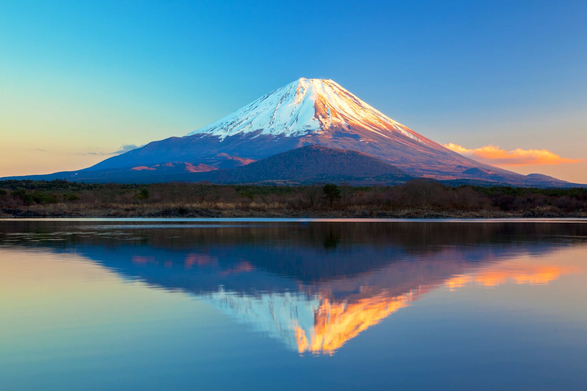
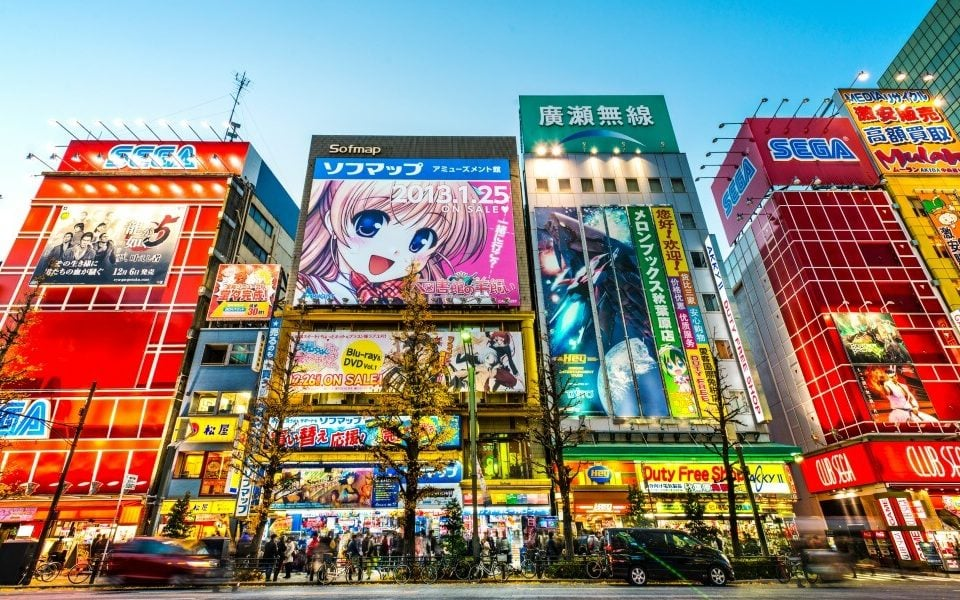

Japão
O Japão é um país asiático banhado pelo oceano Pacífico. Seu território é formado por milhares de ilhas, das quais se destacam quatro: Honshu, a maior delas e onde fica a capital japonesa, Tóquio, Hokkaido, Shikoku e Kyushu. "É um dos países mais populosos do mundo, contando hoje com 126.476.000 de habitantes. A língua falada neste país é o japonês.
Comida típica: sushi
No mundo inteiro, quando se fala ou pensa em comida japonesa, logo vem à mente o sushi. Esse é um dos pratos mais populares da culinária oriental, com origem no antigo método de armazenamento de peixes e arroz cozido durante algumas semanas.

Trata-se do bolinho de arroz enrolado, normalmente, por pela alga, com diferentes recheios que podem ser peixe, vegetais ou frutos-do-mar. A palavra sushi quer dizer azedo, sendo temperado com vinagre e moldado com as mãos.
Ponto turístico: Monte Fuji
A 3.776 metros, o Monte Fuji é o pico mais alto do Japão, resultado da atividade vulcânica que iniciou há aproximadamente cem mil anos. Atualmente, o Monte Fuji e seu entorno são um destino recreativo popular para caminhar, acampar e relaxar.
Um dos símbolos mais emblemáticos do país, viajantes de todo o mundo se dirigem às províncias de Shizuoka e Yamanashi para visitar essa montanha inspiradora. Para os japoneses, no entanto, o Monte Fuji há muito tempo é considerado um lugar de importância espiritual e uma fonte de inspiração artística.
A capital do Japão
Tóquio é a capital do Japão e sede do governo nacional. É considerada uma das maiores metrópoles do planeta e também o centro político, econômico, educacional e cultural do Japão.
A metrópole representa uma das áreas de maior aglomeração urbana do mundo. A metrópole é constituída por 23 bairros, 26 municípios adicionais e as ilhas Izu e Ogasawara.A capital japonesa possui um pouco mais de 9 milhões de habitantes.